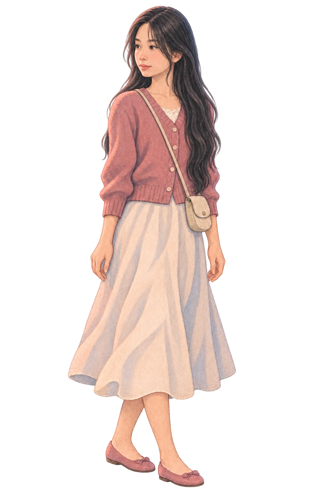

e
một người đặc biệtmột bài viết trên Threads@♡↻
a
Bình luận đầu tiên
♡a
Rồi bài thứ hai
♡a
Và bài thứ ba…
♡KHI CÂU CHUYỆN CHƯA CÓ EM
Đi làm. Về nhà. Ăn uống. Ngủ nghỉ.
Ngày này qua ngày khác, cuộc sống của anh cứ lặp lại như thế.
Rồi một người xuất hiện…
MỘT CHÚT TÌNH CỜ
Bắt đầu từ một bài viết trên Threads.
Anh bình luận ở một bài, rồi hai bài, rồi ba bài. Câu chuyện của mình bắt đầu nhỏ xíu như thế.
Một bình luận. Một khởi đầu.
KHOẢNG CÁCH NGẮN ĐI MỘT CHÚT
Từ những bình luận dưới bài viết,
anh bắt đầu nhắn tin cho em. Hai người xa lạ dần bước vào thế giới của nhau.
Chúng mình, từ một ô tin nhắn.
NHỮNG DÒNG TIN ĐẦU TIÊN
TỪ MÀN HÌNH, ĐẾN NGOÀI ĐỜI
Một buổi gặp. Rồi thêm một buổi nữa.
Người ở phía bên kia màn hình,
giờ đã ở ngay trước mặt anh.
Em ở đây, thật gần.


KHI KHOẢNG CÁCH DẦN BIẾN MẤT
Từ những buổi gặp đầu tiên,
đến những cái ôm và nụ hôn.
Chúng mình cứ thế gần nhau hơn.
Có những điều, chẳng cần nói thành lời.
 ♡♡♡
♡♡♡
NHỮNG ĐIỀU NHỎ BÉ CỦA HAI ĐỨA
Chúng mình dần thân thiết hơn,
có thêm những kỷ niệm cùng nhau.
Thế giới từng đen kịt của anh cũng dần đổi khác.
Từng chút một. Kể từ khi có em.
VÀ CÂU CHUYỆN VẪN ĐANG ĐƯỢC VIẾT
Từ một thế giới chỉ có những ngày lặp lại,
đến một câu chuyện có em.
Cảm ơn em, vì đã bước vào cuộc sống của anh.
Những trang tiếp theo, mình cùng viết nhé.